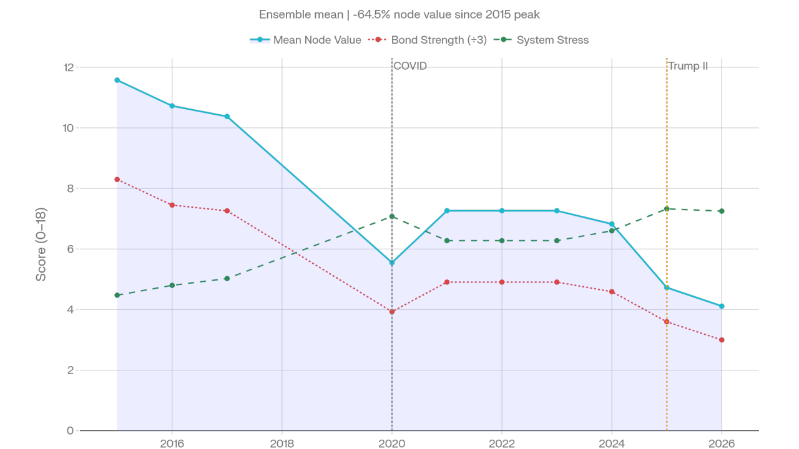

Societies as Evolving Coordination Systems — two papers mark an important consolidation point for the framework.
Two papers mark an important consolidation point for CAMS. The first formally introduces the Complex Adaptive Model of Societies as a method for treating human societies not as loose collections of individuals, but as complex adaptive meta-systems: coordinated, energy-processing, memory-bearing structures that maintain order only by continually resisting entropy. The second extends this argument into the Extended Evolutionary Synthesis, positioning CAMS as the missing coordination layer between cultural evolution, niche construction, cliodynamics, institutional history, and thermodynamic systems theory.
At the centre of the framework is the eight-node CAMS architecture. These are not arbitrary categories, but recurrent coordination functions that any durable human system must solve. A society needs direction, defence, meaning, memory, production, circulation, resource governance, and labour. These functions appear differently in a village, empire, corporation, kingdom, or modern state — but the coordination problems recur across scale. This is the core of CAMS' claim to scale-covariance: not that all societies are equivalent, but that they face structurally comparable adaptive demands.
Helm
Direction & coordination
Shield
Defence & boundaries
Lore
Meaning & narrative
Archive
Memory & record
Craft
Production & skill
Flow
Circulation & exchange
Stewards
Resource governance
Hands
Labour & reproduction
Four Metrics, 32-Dimensional State Space
Each node is scored across four metrics, generating a 32-dimensional state-space trajectory across time. CAMS does not reduce history to a single story — it converts institutional behaviour into a measurable pattern of coupling, stress, resilience, and phase movement.
C
Coherence
Integration & internal alignment
K
Capacity
Demonstrated functional throughput
S
Stress
Disorder, pressure, overload, contradiction
A
Abstraction
Symbolic, administrative & conceptual complexity
The Stress–Capacity Anti-Correlation
The first paper's central empirical claim is the recurring stress–capacity anti-correlation. Across the illustrative longitudinal datasets — Germany, the United Kingdom, Russia, Argentina, and Thailand — rising stress is generally associated with falling capacity, though the strength of this relationship varies by civilisational type. This variation is itself meaningful.
Argentina
Tight stress-capacity coupling — suggests low buffering capacity. What moves the system tends to move it hard.
Russia
Weaker coupling — consistent with a continental-defensive system adapted to sustaining capacity under chronic high stress.
Thailand
Another form of buffering — through Helm–Lore–Shield continuity. Stress absorbs without proportionate capacity loss.

USA CAMS ensemble mean 2015–2026. Mean Node Value down 64.5% from peak; Bond Strength in long decline; System Stress accelerating from 2025.
The German Case: Reading History as Thermodynamic Pattern
Germany — CAMS trajectory
Wilhelmine Consolidation — fast and slow loops coherent; rising capacity
Nazi state Coercive re-coordination — Helm and Shield spike; Archive and Lore structurally hollow
Wartime Peak output — surface cohesion; fast loops over-driven
1945 Collapse — full system failure; node values near zero
The Nazi state appears in the data as a coercive synchronisation event. CAMS therefore distinguishes between genuine renewal and forced surface cohesion — a distinction that narrative history often struggles to make cleanly.
CAMS and the Extended Evolutionary Synthesis
The second paper argues that the Extended Evolutionary Synthesis already recognises cultural inheritance, niche construction, developmental scaffolding, and extra-genetic transmission. What remains under-formalised is the institutional apparatus through which these processes are stabilised, strained, reproduced, and lost. CAMS offers that apparatus.
Archive stores memory. Lore integrates meaning. Craft preserves skill. Flow circulates goods and information. Hands reproduce labour. Stewards regulate resources. Shield maintains boundaries. Helm coordinates direction. Together they form a social substrate for cumulative culture.
This is why the thermodynamic language matters. The papers are careful not to claim that CAMS currently measures physical energy, entropy production, or free energy in joules. CAMS is presented as a thermodynamically motivated coordination formalism — identifying the institutional conditions that make energy capture, entropy export, memory retention, and collective action possible. That distinction strengthens the work.
Cognitive Activation × Effective Capacity: Phase Space
The second paper introduces a diagnostic phase space built around Cognitive Activation and Effective Capacity. Vague historical language — rise, decline, overreach, collapse — becomes testable movement through coordination space.
Adaptive Equilibrium
High activation · High capacity
The system generates and uses complexity effectively. Memory, production, and direction are synchronised.
Cognitive Overreach
High activation · Low capacity
The system generates complexity it cannot sustain. Abstraction outpaces material throughput — the precursor signature of collapse.
Freeze / Fragmentation
Low activation · Low capacity
Terminal decline. Both cognitive and material systems have failed. The system cannot coordinate or reproduce itself.
Residual Category
Low activation · High capacity
Capacity without direction. A system with material resources but degraded meaning and memory — requiring further study.
What CAMS now is
A formal language for studying societies as evolving, stressed, memory-bearing coordination systems
Bridges history, complexity science, cultural evolution, and thermodynamics without collapsing any of them into a single metaphor
Strongest claim is also its most modest: societies can be measured as patterns of coordination — and those patterns reveal when a system is adapting, overreaching, freezing, or approaching transition
The German case demonstrates the key distinction: coercive synchronisation vs genuine institutional renewal — readable in the data